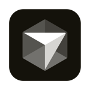

数字叙事者 · 技术探索者
游 牧 人
故事讲述是我的热情所在，因为我被他人的故事深刻塑造。有无数种方式可以讲述这个世界的故事——这是我的一种。
07
def daily_routine():
focus_time = "Deep Work"
tools = ["Obsidian", "Python"]
while learning:
improve_skills()
if stuck:
read_documentation()
return growth
# 保持好奇，保持饥饿
print("Hello World")

探索更多